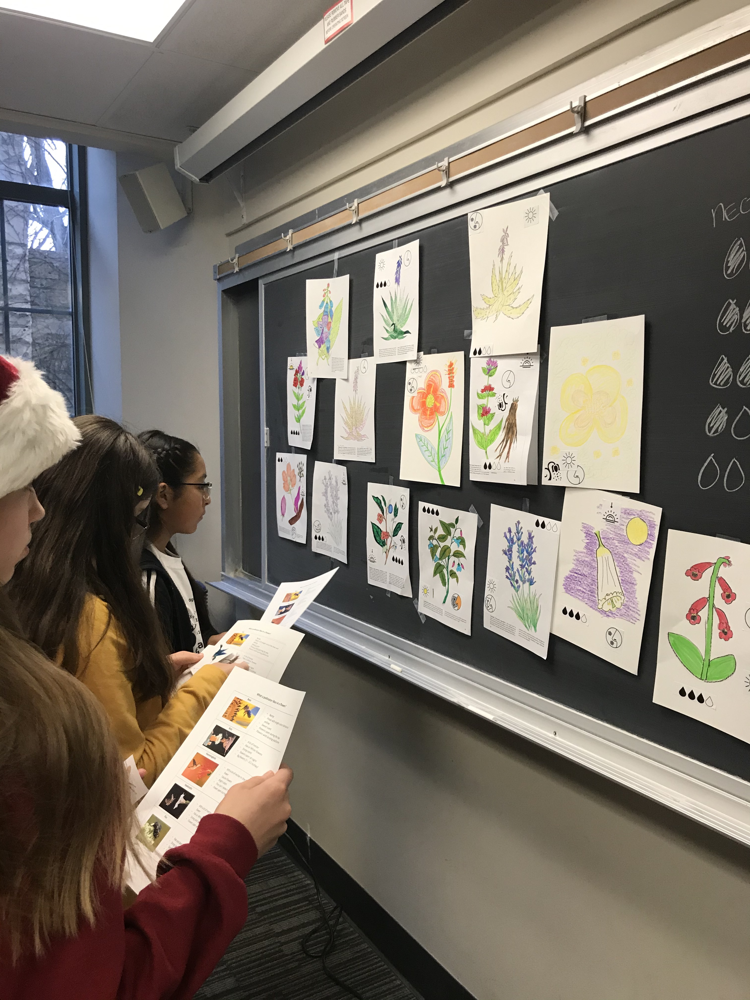

I think science should be accessible, fun, informative and engaging for as many people as possible. To that end, I try to be involved with groups and efforts bringing real science content to the world outside of the lab. This page highlights some of those efforts, and also some of the inspiring outreach done by people close to me.
The Chicago Botanic Garden hosts a yearly Science Festival. This year I will have a booth at the Science After Hours event that Friday night (April 17th) exploring how floral traits affect mating between plants. Learn the complicated dynamics of plant sex and enjoy fancy cocktails!


Fellow graduate students Anita @AnitaCisternasF, Katie, and I gave a workshop on pollination to groups of middle school students with Expanding Your Horizons Chicago. EYH holds symposia dedicated to providing middle school girls with exciting experiences in STEM and illuminating the diversity of STEM careers. It was so much fun to see the flower designs these girls came up with!
